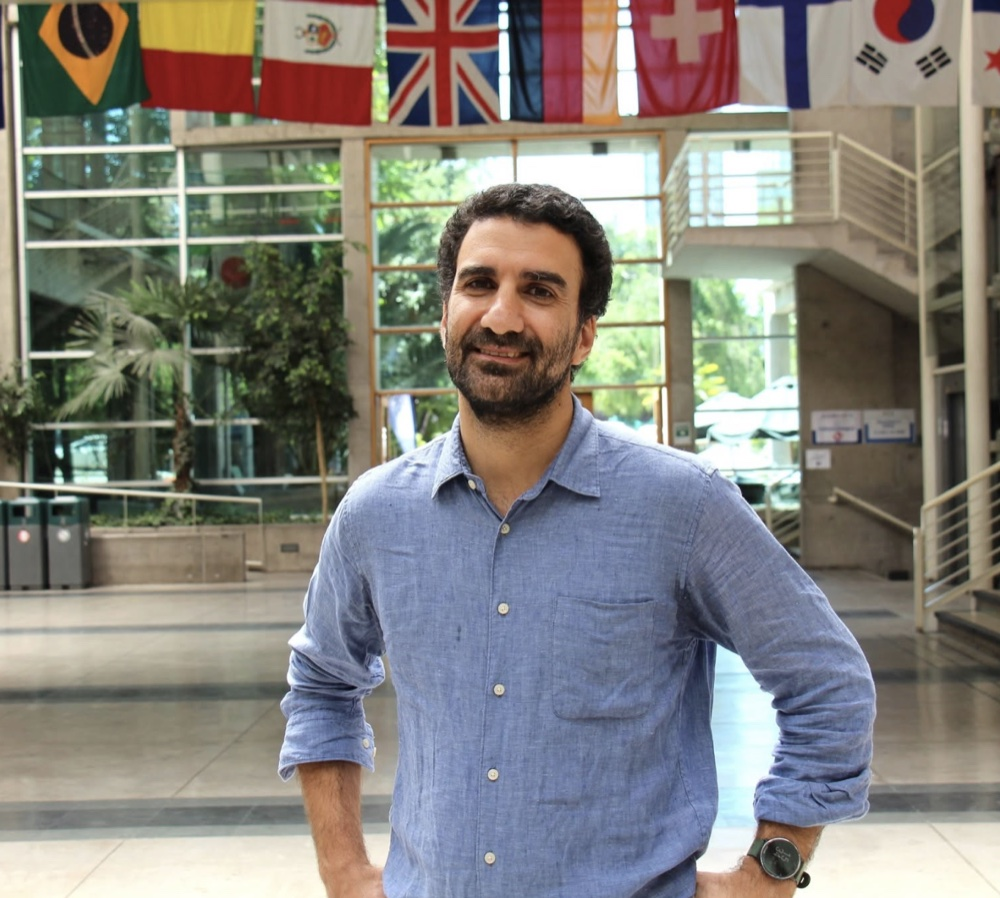

PIER Working Paper 25-016 · 2025
Juan Pablo Atal
I am an Associate Professor of Economics at the University of Pennsylvania and a Faculty Research Fellow at the National Bureau of Economic Research. I study Industrial Organization and Public Economics, with a focus on the Economics of Healthcare. Thank you for visiting my website!

Juan Pablo AtalUniversity of Pennsylvania
Research
Working paper
The Impact of Information Systems in High-Stakes Decisions: Evidence from Physicians
DraftRevision requested · Journal of the European Economic Association
Treating Surgeons: Evidence from a Field Experiment on Cost Containment
Draft forthcomingAccepted · Review of Economic Studies
Quality Regulation and Competition: Evidence from Pharmaceutical Markets
Journal of Political Economy · 2025
German Long-Term Health Insurance: Theory Meets Evidence
American Economic Review · 2024
The Economics of the Public Option: Evidence from Local Pharmaceutical Markets
PaperInternational Journal of Industrial Organization · 2024
Drivers of Public Procurement Prices: Evidence from Pharmaceutical Markets
PaperAEA Papers and Proceedings · 2020
Countervailing Market Power and Consumer Surplus: An Empirical Examination
PaperThe RAND Journal of Economics · 2020
Trade Associations and Collusion among Many Agents: Evidence from Physicians
PaperPIER Working Paper 19-020 · 2019
Lock-in in Dynamic Health Insurance Contracts: Evidence from Chile
PaperJournal of Risk and Insurance · 2019
Exit, Voice, or Loyalty? An Investigation into Mandated Portability of Front-Loaded Private Health Plans
PaperHealth Economics · 2018
How Robust Are Reference Pricing Studies on Outpatient Medical Procedures?
PaperWorking paper
Social and Economic Activity Predicts Daily Hospital Emergency Visits
PaperPreviously circulated as “Activity and the Incidence of Emergencies: Evidence from Daily Data at the Onset of a Pandemic.”
An earlier version was published as “Where Are the Missing Emergencies? Lockdown and Health Risk During the Pandemic,” Covid Economics, Issue 14, 6 May 2020, pp. 57–84.
Work in progress
Centralizing Procurement: The Role of Scale, Selection, and Variety
Work in progress
Static and Dynamic Incentives in Insurance Markets
Work in progress
The Incentives of Patients and Providers in Out-of-Network Emergency Visits
At Penn
Teaching
I teach undergraduate and graduate courses in industrial organization and health economics.
ECON 8400
Graduate Topics in Industrial Organization
Graduate
ECON 4460
Health Economics
Undergraduate
ECON 4450
Industrial Organization
Undergraduate
Workshop
RIDGE-IO Workshop
I am a research co-director and co-organizer, with Sebastian Fleitas, of the RIDGE Industrial Organization Workshop. The 2027 workshop will be held at EAFIT in Medellín, Colombia, on May 20 and 21. The call for papers will be announced soon.